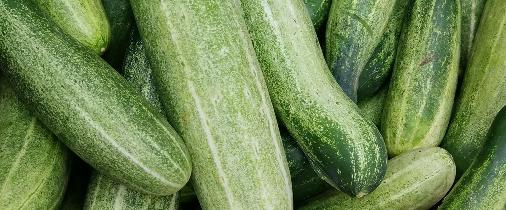

When to plant cucumbers in Oregon and Washington
In Portland: Plant cucumbers in the garden May 10 – Jun 7, either as seeds or as young plants started indoors Apr 12–19. In Bend: Jun 9 – Jul 7. Find your city below.
- Difficulty
- Moderate
- Sun
- Full sun
- Spacing
- 12 inches apart on a trellis
- Planting depth
- 1 inch deep
- Frost
- Killed by frost
- First harvest
- About 60 days after planting
Need warm soil and warm nights. Floating row cover helps in cool springs.
Cucumbers planting dates
| City | Start seeds indoors | Plant in the garden |
|---|---|---|
| Portland, OR | Apr 12–19 | May 10 – Jun 7 |
| Seattle and Tacoma, WA | Apr 12–19 | May 10 – Jun 7 |
| Eugene, OR | Apr 12–19 | May 10 – Jun 7 |
| Spokane, WA | Apr 22–29 | May 20 – Jun 17 |
| Bend and Redmond, OR | May 12–19 | Jun 9 – Jul 7 |
| Tri-Cities (Pasco, Kennewick, Richland), WA | Apr 3–10 | May 1–29 |
All 30 Oregon and Washington cities
| City | Start seeds indoors | Plant in the garden |
|---|---|---|
| Astoria, OR | Apr 22–29 | May 20 – Jun 17 |
| Baker City, OR | Apr 27 – May 4 | May 25 – Jun 22 |
| Bend and Redmond, OR | May 12–19 | Jun 9 – Jul 7 |
| Burns, OR | May 14–21 | Jun 11 – Jul 9 |
| Coos Bay and North Bend, OR | Apr 22–29 | May 20 – Jun 17 |
| Eugene, OR | Apr 12–19 | May 10 – Jun 7 |
| Gresham, OR | Apr 12–19 | May 10 – Jun 7 |
| Klamath Falls, OR | May 12–19 | Jun 9 – Jul 7 |
| Medford, OR | Apr 12–19 | May 10 – Jun 7 |
| Pendleton, OR | Apr 3–10 | May 1–29 |
| Portland, OR | Apr 12–19 | May 10 – Jun 7 |
| Roseburg, OR | Apr 12–19 | May 10 – Jun 7 |
| Salem, OR | Apr 12–19 | May 10 – Jun 7 |
| The Dalles, OR | Apr 3–10 | May 1–29 |
| Wilsonville and Canby, OR | Apr 12–19 | May 10 – Jun 7 |
| Aberdeen and Hoquiam, WA | Apr 22–29 | May 20 – Jun 17 |
| Bellingham, WA | Apr 12–19 | May 10 – Jun 7 |
| Ellensburg, WA | Apr 22–29 | May 20 – Jun 17 |
| Everett, WA | Apr 12–19 | May 10 – Jun 7 |
| Forks, WA | Apr 22–29 | May 20 – Jun 17 |
| Moses Lake, WA | Apr 3–10 | May 1–29 |
| Olympia, WA | Apr 12–19 | May 10 – Jun 7 |
| Omak and Okanogan, WA | Apr 22–29 | May 20 – Jun 17 |
| Seattle and Tacoma, WA | Apr 12–19 | May 10 – Jun 7 |
| Spokane, WA | Apr 22–29 | May 20 – Jun 17 |
| Tri-Cities (Pasco, Kennewick, Richland), WA | Apr 3–10 | May 1–29 |
| Vancouver, WA | Apr 12–19 | May 10 – Jun 7 |
| Walla Walla, WA | Apr 3–10 | May 1–29 |
| Wenatchee, WA | Apr 3–10 | May 1–29 |
| Yakima, WA | Apr 10–17 | May 8 – Jun 5 |
How to grow cucumbers
- Start seeds indoors on your city's dates in trays or small pots under a grow light or in your sunniest window. Or skip this step and buy young plants (starts) at a garden center.
- Harden off the young plants: about a week before planting, set them outside for a few hours a day, a little longer each day.
- Plant them in the garden on your city's dates, 12 inches apart on a trellis. If you plant seeds instead, sow them 1 inch deep.
- Water deeply once or twice a week rather than a little every day, and mulch once the soil is warm.
- Harvest: Pick slicers at 6 to 8 inches, before they yellow. Check plants every day or two in midsummer.
Key numbers
- 60°F+Soil to sprout
- Below 50°FChill damage
- About 95% waterFruit is
- 6.0–7.0Soil pH
- 6–8 inchesPick slicers at
- 50–55°FStore
How it works
The plant biology behind the advice above, in plain language.
Warmth is everything
Cucumbers are a tropical crop. Seeds need soil of at least 60°F to sprout and do best much warmer, and long spells below about 50°F damage plants. In much of the Northwest, transplants or seeds go out only once nights are reliably warm. Black plastic mulch, a south-facing spot and row cover early in the season help.
Flowers and fruit set
Most cucumbers make separate male and female flowers, and bees carry pollen between them. Fruit from poorly pollinated flowers grows misshapen, narrow or curled at one end.
Some modern varieties set fruit with no pollination at all. These parthenocarpic varieties, such as Diva, produce seedless fruit and are a smart choice for greenhouses and for cool, cloudy summers when bees are scarce. Other hybrids are mostly female and come with a few marked seeds of a pollinator variety; plant those too.
Water and bitterness
Cucumbers are about 95 percent water, so they need steady moisture, about an inch a week, more in hot weather. Bitter cucumbers come from natural compounds called cucurbitacins, which increase when plants are stressed by heat, drought or uneven watering. The bitterness concentrates near the stem end and in the skin. Even watering prevents most of it, and burpless varieties are bred to be low in these compounds.
Soil and disease
Grow them in rich, well-drained soil with a pH of about 6.0 to 7.0. Trellising keeps fruit clean and straight and improves airflow, which slows powdery mildew in late summer. Resistant varieties like Marketmore 76 hold up longer. Slugs are the main threat to seedlings here.
Harvest and storage
Pick slicers at 6 to 8 inches and picklers at 2 to 4, checking every day or two. Leaving a mature, yellowing cucumber on the vine signals the plant to stop setting new ones. Cucumbers are chill-sensitive, so they keep best around 50 to 55°F; in the fridge, use them within a few days before they soften and pit.
Common questions about growing cucumbers
Why are my cucumbers bitter?
Bitterness comes from natural compounds called cucurbitacins, which build up when plants are stressed by heat, drought or uneven watering. Water deeply and regularly, and try burpless varieties. Peeling and trimming the stem end removes most of it.
Why are my cucumbers curled or misshapen?
Usually incomplete pollination, often in cool or cloudy weather when bees aren't active. Uneven watering contributes too. Parthenocarpic varieties, which set fruit without pollination, avoid the problem.
Can I grow cucumbers in a cool summer?
Yes. Wait for warm soil, use black plastic mulch and row cover early, trellis the vines in your sunniest spot, and choose parthenocarpic or fast-maturing varieties. A greenhouse or hoop house makes them very reliable.